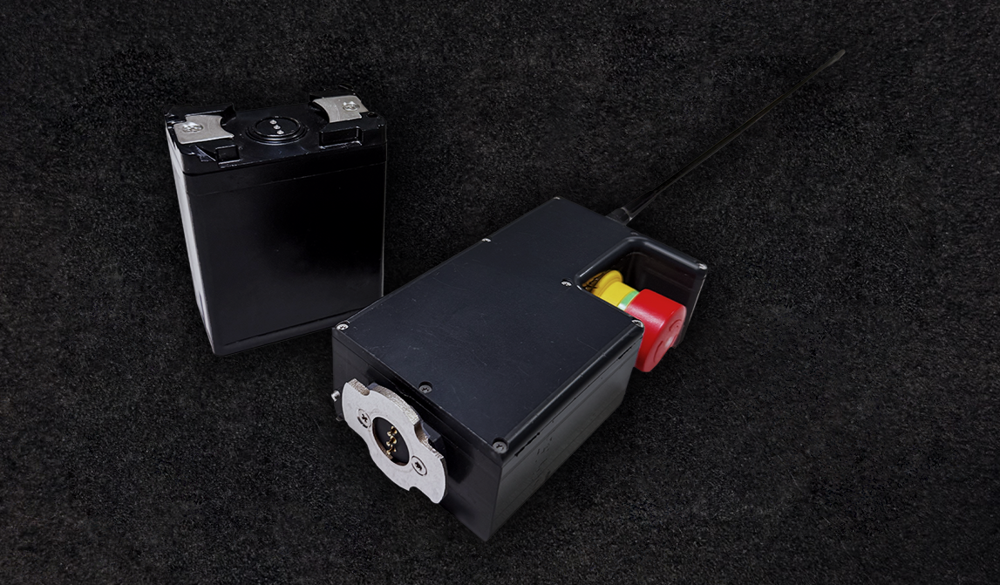

E-STOP Receiver
E-STOP Receiver
Core Capabilities
Dedicated safety channel for reliable remote stop control across marine systems.
· Safety: Fast, deterministic stop signaling with isolation from primary control buses.
· Integration: Compatible with autonomy stacks and manual override workflows.
· Enclosure: Marine-grade build suitable for harsh operational environments.
· Telemetry: Works with the Fathom Robotics USV Companion Interface for visibility and logging.